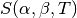
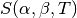

3. Cross Section Representation¶
The data governing the interaction of neutrons with various nuclei are represented using the ACE format which is used by MCNP and Serpent. ACE-format data can be generated with the NJOY nuclear data processing system which converts raw ENDF/B data into linearly-interpolable data as required by most Monte Carlo codes. The use of a standard cross section format allows for a direct comparison of OpenMC with other codes since the same cross section libraries can be used.
The ACE format contains continuous-energy cross sections for the following types
of reactions: elastic scattering, fission (or first-chance fission,
second-chance fission, etc.), inelastic scattering,  ,
,
 , and various other absorption reactions. For those reactions
with one or more neutrons in the exit channel, secondary angle and energy
distributions may be provided. In addition, fissionable nuclides have total,
prompt, and/or delayed
, and various other absorption reactions. For those reactions
with one or more neutrons in the exit channel, secondary angle and energy
distributions may be provided. In addition, fissionable nuclides have total,
prompt, and/or delayed  as a function of energy and neutron precursor
distributions. Many nuclides also have probability tables to be used for
accurate treatment of self-shielding in the unresolved resonance range. For
bound scatterers, separate tables with  scattering law
data can be used.
as a function of energy and neutron precursor
distributions. Many nuclides also have probability tables to be used for
accurate treatment of self-shielding in the unresolved resonance range. For
bound scatterers, separate tables with  scattering law
data can be used.
3.1. Energy Grid Methods¶
The method by which continuous energy cross sections for each nuclide in a problem are stored as a function of energy can have a substantial effect on the performance of a Monte Carlo simulation. Since the ACE format is based on linearly-interpolable cross sections, each nuclide has cross sections tabulated over a wide range of energies. Some nuclides may only have a few points tabulated (e.g. H-1) whereas other nuclides may have hundreds or thousands of points tabulated (e.g. U-238).
At each collision, it is necessary to sample the probability of having a
particular type of interaction whether it be elastic scattering,  ,
level inelastic scattering, etc. This requires looking up the microscopic cross
sections for these reactions for each nuclide within the target material. Since
each nuclide has a unique energy grid, it would be necessary to search for the
appropriate index for each nuclide at every collision. This can become a very
time-consuming process, especially if there are many nuclides in a problem as
there would be for burnup calculations. Thus, there is a strong motive to
implement a method of reducing the number of energy grid searches in order to
speed up the calculation.
,
level inelastic scattering, etc. This requires looking up the microscopic cross
sections for these reactions for each nuclide within the target material. Since
each nuclide has a unique energy grid, it would be necessary to search for the
appropriate index for each nuclide at every collision. This can become a very
time-consuming process, especially if there are many nuclides in a problem as
there would be for burnup calculations. Thus, there is a strong motive to
implement a method of reducing the number of energy grid searches in order to
speed up the calculation.
3.1.1. Unionized Energy Grid¶
The most naïve method to reduce the number of energy grid searches is to construct a new energy grid that consists of the union of the energy points of each nuclide and use this energy grid for all nuclides. This method is computationally very efficient as it only requires one energy grid search at each collision as well as one interpolation between cross section values since the interpolation factor can be used for all nuclides. However, it requires redundant storage of cross section values at points which were added to each nuclide grid. This additional burden on memory storage can become quite prohibitive. To lessen that burden, the unionized energy grid can be thinned with cross sections reconstructed on the thinned energy grid. This method is currently used by default in the Serpent Monte Carlo code.
3.1.2. Unionized Energy Grid with Nuclide Pointers¶
While having a unionized grid that is used for all nuclides allows for very fast lookup of cross sections, the burden on memory is in many circumstances unacceptable. The OpenMC Monte Carlo code utilizes a method that allows for a single energy grid search to be performed at every collision while avoiding the redundant storage of cross section values. Instead of using the unionized grid for every nuclide, the original energy grid of each nuclide is kept and a list of pointers (of the same length as the unionized energy grid) is constructed for each nuclide that gives the corresponding grid index on the nuclide grid for a given grid index on the unionized grid. One must still interpolate on cross section values for each nuclide since the interpolation factors will generally be different. The figure below illustrates this method. All values within the dashed box would need to be stored on a per-nuclide basis, and the union grid would need to be stored once. This method is also referred to as double indexing and is available as an option in Serpent (see paper by Leppanen).

Mapping of union energy grid to nuclide energy grid through pointers.